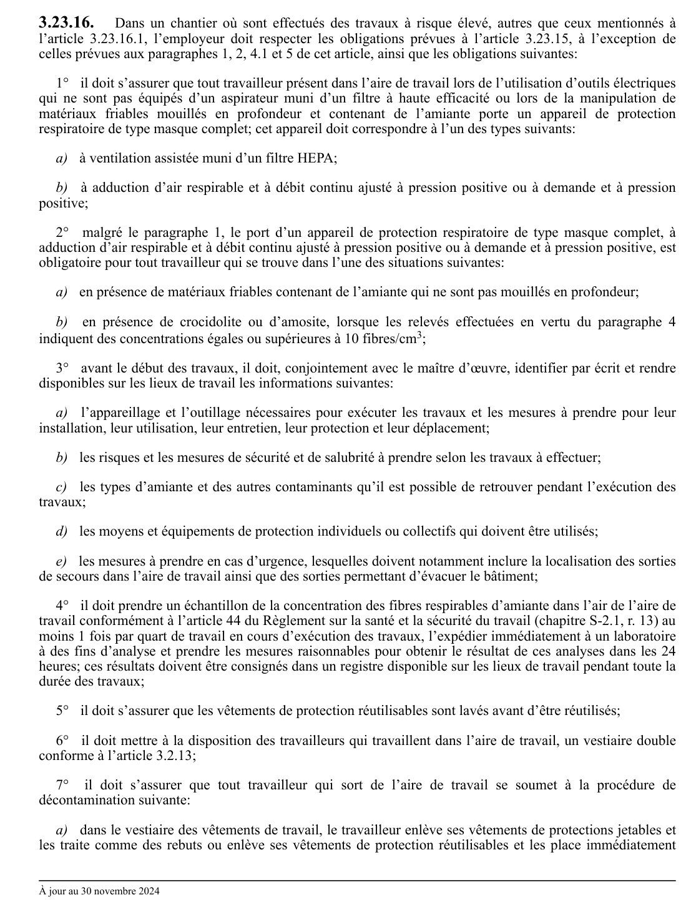

art-3.23.16-CSTC : dans un chantier où sont effectués des
Dans un chantier où sont effectués des travaux à risque élevé, autres que ceux mentionnés à l'article 3.23.16.1, l'employeur doit respecter les obligations prévues à l'article 3.23.15, à l'exception de celles prévues aux paragraphes 1, 2, 4.1 et 5 de cet article, ainsi que les obligations suivantes: 1° il doit s'assurer que tout travailleur présent dans l'aire de travail...
🌐 LegisQuébec · 📄 PDF officiel
Texte officiel
Dans un chantier où sont effectués des travaux à risque élevé, autres que ceux mentionnés à l’article 3.23.16.1, l’employeur doit respecter les obligations prévues à l’article 3.23.15, à l’exception de celles prévues aux paragraphes 1, 2, 4.1 et 5 de cet article, ainsi que les obligations suivantes:
1° il doit s’assurer que tout travailleur présent dans l’aire de travail lors de l’utilisation d’outils électriques qui ne sont pas équipés d’un aspirateur muni d’un filtre à haute efficacité ou lors de la manipulation de matériaux friables mouillés en profondeur et contenant de l’amiante porte un appareil de protection respiratoire de type masque complet; cet appareil doit correspondre à l’un des types suivants:
a) à ventilation assistée muni d’un filtre HEPA;
b) à adduction d’air respirable et à débit continu ajusté à pression positive ou à demande et à pression positive;
2° malgré le paragraphe 1, le port d’un appareil de protection respiratoire de type masque complet, à adduction d’air respirable et à débit continu ajusté à pression positive ou à demande et à pression positive, est obligatoire pour tout travailleur qui se trouve dans l’une des situations suivantes:
a) en présence de matériaux friables contenant de l’amiante qui ne sont pas mouillés en profondeur;
b) en présence de crocidolite ou d’amosite, lorsque les relevés effectuées en vertu du paragraphe 4 indiquent des concentrations égales ou supérieures à 10 fibres/cm ;
3° avant le début des travaux, il doit, conjointement avec le maître d’œuvre, identifier par écrit et rendre disponibles sur les lieux de travail les informations suivantes:
a) l’appareillage et l’outillage nécessaires pour exécuter les travaux et les mesures à prendre pour leur installation, leur utilisation, leur entretien, leur protection et leur déplacement;
b) les risques et les mesures de sécurité et de salubrité à prendre selon les travaux à effectuer;
c) les types d’amiante et des autres contaminants qu’il est possible de retrouver pendant l’exécution des travaux;
d) les moyens et équipements de protection individuels ou collectifs qui doivent être utilisés;
e) les mesures à prendre en cas d’urgence, lesquelles doivent notamment inclure la localisation des sorties de secours dans l’aire de travail ainsi que des sorties permettant d’évacuer le bâtiment;
4° il doit prendre un échantillon de la concentration des fibres respirables d’amiante dans l’air de l’aire de travail conformément à l’article 44 du Règlement sur la santé et la sécurité du travail (chapitre S-2.1, r. 13) au moins 1 fois par quart de travail en cours d’exécution des travaux, l’expédier immédiatement à un laboratoire à des fins d’analyse et prendre les mesures raisonnables pour obtenir le résultat de ces analyses dans les 24 heures; ces résultats doivent être consignés dans un registre disponible sur les lieux de travail pendant toute la durée des travaux;
5° il doit s’assurer que les vêtements de protection réutilisables sont lavés avant d’être réutilisés;
6° il doit mettre à la disposition des travailleurs qui travaillent dans l’aire de travail, un vestiaire double conforme à l’article 3.2.13;
7° il doit s’assurer que tout travailleur qui sort de l’aire de travail se soumet à la procédure de décontamination suivante:
a) dans le vestiaire des vêtements de travail, le travailleur enlève ses vêtements de protections jetables et les traite comme des rebuts ou enlève ses vêtements de protection réutilisables et les place immédiatement dans un récipient rempli d’eau ou, dans le cas où le lavage de ces vêtements est effectué dans le vestiaire des vêtements de travail, dans la cuve remplie d’eau de la laveuse;
b) dans le vestiaire des vêtements de travail, le travailleur enlève ses vêtements de travail et ses chaussures de protection et ceux-ci, avant d’être rangés, sont lavés ou nettoyés à l’aide d’un aspirateur muni d’un filtre à haute efficacité;
c) le travailleur lave puis enlève son casque de sécurité et son appareil de protection respiratoire sous la douche; les cartouches non réutilisables sont jetées dans une poubelle et les autres parties de l’appareil sont lavées sous la douche avant de les suspendre dans un endroit propre et à l’abri des poussières;
d) le travailleur prend sa douche immédiatement avant d’accéder au vestiaire des vêtements de ville;
e) les vêtements de travail et les chaussures de protection sont lavés avant d’être transportés à l’extérieur des lieux de travail visés au présent article; dans le cas où ces vêtements de travail sont des vêtements d’hiver, ils doivent être nettoyés à l’aide d’un aspirateur muni d’un filtre à haute efficacité, placés dans un sac étanche et l’employeur les fait nettoyer à sec et les fait imperméabiliser;
8° il doit isoler l’aire de travail et le vestiaire des vêtements de travail du reste du bâtiment au moyen d’une enceinte étanche et équipée d’un système de ventilation par extraction; ce système de ventilation doit satisfaire aux exigences suivantes:
a) il doit être muni d’un filtre à haute efficacité;
b) il doit procurer au moins 4 changements d’air à l’heure;
c) il doit assurer une pression négative d’une valeur comprise entre 1 et 4 Pa;
9° malgré le paragraphe 8, lors de travaux effectués à l’extérieur, une enceinte étanche n’est requise que pour le vestiaire des vêtements de travail; dans ce cas, la voie de circulation des travailleurs qui relie l’aire de travail et le vestiaire des vêtements de travail doit être délimitée par des signaux de danger;
10° au début et à la fin de chaque quart de travail, il doit s’assurer du bon état de l’enceinte étanche; en cas de bris ou de défectuosité de l’enceinte, les travaux doivent cesser jusqu’à ce que l’enceinte soit réparée;
11° il doit isoler les bouches de retour d’air du système de ventilation du bâtiment de l’aire de travail, avant le début des travaux et au cours de ceux-ci;
12° à la fin des travaux, il est interdit de démanteler l’enceinte étanche ou de retirer les membranes étanches avant que la concentration de fibres respirables d’amiante dans l’aire de travail ne soit inférieure à 0,01 fibre/cm ; ce relevé doit être effectué conformément à l’article 44 du Règlement sur la santé et la sécurité du travail.
Texte de l’article 3.23.16 CSTC, extrait de la couche texte du PDF officiel (page 109), sans OCR ni retouche. La capture ci-dessous et le PDF font foi.
{kind=link}

Toucher l'image pour l'agrandir🔗 CSTC.pdf : page 109 · texte à jour au 30 novembre 2024
📚 Source légale : D. 54-90, a. 3 · LégisQuébec
Voir aussi
- art. 3.23.15.1
- art. 3.23.16.1
- ⚖️ Loi habilitante : LSST
- ↑ Section 3 : Chantiers de construction
Pages qui pointent ici (3)
- art-3.23.15.1-CSTC : dans un chantier où sont effectués des Recueil législatif
- art-3.23.16.1-CSTC : l'employeur qui effectue des travaux de manipulation Recueil législatif
- CSTC : Section 3 : Chantiers de construction Recueil législatif